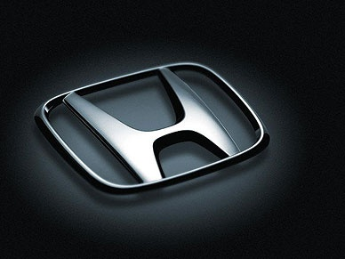
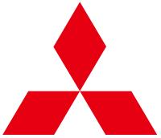

Программа A-GARANT разработана специально для автосалонов, которым необходимо получить аналог гарантии завода-изготовителя на машины, которые ввозятся на территорию России по схеме параллельного импорта, однако данные дилеры или автосалоны, в силу ряда причин, не видят необходимости в предоставлении Клиенту полного аналога заводской гарантии, такой как наш продукт ZAVOD-GARANT (полный аналог гарантии завода-изготовителя), и предпочитают продать клиенту заводскую гарантию в ограниченной версии, куда входит гарантийное обслуживание не всех деталей, узлов и агрегатов ТС, а только основных, с которыми проблемы случаются значительно чаще в период действия гарантии на товар (автомобиль).
Основные особенности и требования программы A-GARANT
- Для физлиц
- Версия V1.0 от 06 Августа 2022 г.
- Для всей территории России
Условия программы A-GARANT
Программа распространяется на новые ТС, приобретаемые в автосалонах, на которые НЕ распространяется заводская и дилерская гарантии на территории РФ. К программе могут быть допущены:
- Иностранные легковые автомобили, за исключением ТС китайского производства
- Автомобиль должен быть выпущен не ранее 2020 г.
- Пробег автомобиля не должен составлять более 2000 (две тысячи) км. на дату подключения к программе Гарантии
- Срок действия программы до 1-7 лет или до 100 тыс. км. пробега автомобиля (в зависимости от того, какое событие наступит раньше)
Сертификат Гарантии может быть выписан на срок до 7 лет
Стоимость A-GARANT для Дилеров и Автосалонов
Гарантийный Сертификат может быть выписан на срок до 7 лет. Стоимость программы формируется в процентах от стоимости ТС, указанного в договоре купли-продажи. Информацию о ценах на Программу A-GARANT и информацию по максимальному комиссионному вознаграждению (КВ) для отделов КСО, можно получить по индивидуальному запросу к кураторам программы. Стоимость продукта формируется с применением скидки, на каждый последующий год действия программы Гарантии, в зависимости от количества лет действия выданного клиенту Сертификата.
Пример учета скидки, в зависимости от срока Гарантии:
Предположим, имеется некий автомобиль Mercedes-Benz, который подключается к программе на 1 год. К примеру, НЕТТО-стоимость продукта на 1 год (только на один год) в этом случае составляет, предположим - 30 (тридцать) тысяч рублей. Тогда при условии, что эту же машину подключить к программе на несколько лет, НЕТТО-стоимость Гарантии за каждый год будет ниже, например:
A-GARANT на 3 года
24 900/ 1 год
- Скидка 17% - с учетом срока действия Гарантии 3 года
- 30% от ДКП - Общий лимит ответственности за 1 год программы
- 20% от ДКП - лимит ответственности на одно обращение по гарантии
- Количество обращений - Не ограничено за весь срок действия программы
- 60% - Максимальное комиссионное вознаграждение агента
A-GARANT на 5 лет
21 600/ 1 год
- Скидка 28% - с учетом срока действия Гарантии 5 лет
- 30% от ДКП - Общий лимит ответственности за 1 год программы
- 20% от ДКП - лимит ответственности на одно обращение по гарантии
- Количество обращений - Не ограничено за весь срок действия программы
- 60% - Максимальное комиссионное вознаграждение агента
A-GARANT на 7 лет
18 300/ 1 год
- Скидка 39% - с учетом срока действия Гарантии 7 лет
- 30% от ДКП - Общий лимит ответственности за 1 год программы
- 20% от ДКП - лимит ответственности на одно обращение по гарантии
- Количество обращений - Не ограничено за весь срок действия программы
- 60% - Максимальное комиссионное вознаграждение агента
Начало действия программы A-GARANT
Программа Гарантии A-GARANT начинает действовать сразу после получения автовладельцем Гарантийного сертификата и сервисной книжки, однако, предусматривает обязательную обкатку нового автомобиля и прохождения Клиентом обязательного технического обслуживания после обкатки ТС, через первые 1000 км. пробега ТС, о чем должна присутствовать отметка в сервисной книжке. Обязательное техническое обслуживание после обкатки включает в себя:
- Замена масла, масляного и воздушного фильтров в двигателе Автомобиля
- Комплексная проверка исправности всех узлов и агрегатов на которые распространяется Гарантия
Лимиты ответственности
Общий лимит ответственности за каждый год действия программы, составляет 30 % от стоимости автомобиля, указанной в договоре купли-продажи авто, но не более 1 миллиона рублей.
Максимальный лимит ответственности на одно обращение за услугами по программе, составляет 400 (четыреста) тысяч рублей, но не более 20% от стоимости автомобиля, определенной в договоре купли-продажи ТС.
Количество обращений Клиента за услугами по программе гарантии, за весь период её действия - не ограничено
Марки автомобилей допущенные для участия в программе Гарантии
К программе независимой Гарантии можно подключить ограниченный перечень изготовителей Зарубежных марок. В данный перечень не входят машины китайского производства, а также любые ТС класса LUX. Перечень также ограничен допущенными моделями ТС. Подробный список марок и моделей можно получить по отдельному запросу у кураторов продукта:
Порядок цифр, с учетом нашей статистики
Кто допущен и кто уже на Гарантии
Исключения участия в программе Гарантии
В Программе гарантии не могут участвовать грузовые автомобили, спецтехника, легковые автомобили Китайского производства, а также легковые автомобили старше 2020 г.в., массой более 3 500 кг, с пробегом по одометру более 2000 км. на момент подключения к программе Гарантии.
В Программе гарантии не могут участвовать ТС, оборудованные роторно-поршневыми или электродвигателями, работающие на сжиженном газе, имеющие модификацию или изменения, затрагивающие силовую часть, трансмиссию, систему усиления рулевого управления, тормозную систему, подвеску, электрооборудование, систему кондиционирования, а также автомобили коммерческого использования, автомобили используемые в такси, автомобили используемые для спортивных заездов или для учебной езды, автомобили с двигателями на сжиженном газу. а также электромобили
Какие узлы и агрегаты входят в программу Гарантии A-GARANT
По программе Гарантии подлежат обслуживанию следующие детали узлы и агрегаты:
- Двигатель
- Трансмиссия
- Система охлаждения
- Система отопления
- Система кондиционера
- Рулевое управление
- Топливная система
- Тормозная система
- Сальники, уплотнители, прокладки, расходные материалы (при условии проведения Гарантийного ремонта)
Какие узлы и агрегаты не входят в программу Гарантии A-GARANT
По программе Гарантии не подлежат обслуживанию следующие детали узлы и агрегаты:
- детали и материалы салона (обивки, облицовки, накладки, уплотнители и т.д.);
- детали ходовой части и подвески
- детали любых систем электрооборудования
- детали кузова и лакокрасочное покрытие
- детали и материалы для обязательного, планового и регламентного ТО;
- дополнительное оборудование и детали тюнинга, установленное не заводом-производителем
- Система электрики
- Электронные модули управления, электропроводка, соленоиды
- Датчики, реле, оптические приборы, электро клапаны, регуляторы
- Электродвигатели, переключатели, электроприводы, катушки, индикаторы
- Программное обеспечение и прошивки любых систем ТС
Случилась поломка автомобиля
Порядок обслуживания клиента при наступлении гарантийного случая, мало чем отличаются от урегулирования случая страхового (например КАСКО после ДТП). Главное отличие состоит в том, что автовладельцу нет необходимости посещать наш офис и заполнять массу документов. Вся система урегулирования строится на электронном документообороте, когда клиент предоставляет всю информацию на электронный адрес. Также, предусмотрена возможность удаленного урегулирования с привлечением сотрудников Автосалона (дилера):
Порядок урегулирования Гарантийного случая
При возникновении претензии по технической исправности автомобиля, Клиент обращается в Технический центр или к дилеру
Шаг 1
Подача заявки
При возникновении неисправности, клиент связывается с нашим колл-центром, получает консультацию по порядку действий и подает заявку на электронный адрес Техцентра, описывая как можно подробнее возникшую проблему
Шаг 2
Рассмотрение заявки
Компания рассматривает и обрабатывает заявку клиента в течение 1-го рабочего дня, принимает предварительное решение о гарантийном случае и выбирает порядок действий для урегулирования
Шаг 3
Выполнение диагностики
После предварительного рассмотрения гарантийного случая, клиенту выписывается направление на диагностику в условиях СТО и отсылается на его электронный адрес. Направление также дублируется представителю выбранного для диагностики автосервиса в качестве заявки
Шаг 4
Подведение итогов диагностики
по итогам выполненной диагностики, автосервис предоставляет заключение о выявленных неисправностях и предварительный заказ-наряд, содержащий расчет стоимости устранения дефектов
Шаг 5
Согласование ремонта
Технический центр рассматривает предоставленный автосервисом заказ-наряд и принимает решение о причастности той или иной поломки к гарантийному событию. Согласование ремонта выполняется только по деталям и агрегатам, присутствующем в гарантийном списке
Шаг 6
Оплата ремонта
После согласования заказ-наряда по перечню деталей, а также по стоимости работ, запчастей и материалов для ремонта, автосервис СТО выставляет счет Техническому центру для оплаты. Оплата счета производится в течение 2-х рабочих дней
Шаг 7
Ремонт автомобиля
после поступления денежных средств на расчетный счет СТО, производится ремонт ТС по предварительно согласованному заказ-наряду. Сроки ремонта ограничены 45 днями (в соответствии с Законодательством) и могут увеличиться только при условии задержки поставки запасных частей и/или материалов
Шаг 8
Готово
после окончания ремонта, СТО извещает об этом Техцентр и Клиента. Прием авто из ремонта производит либо сам клиент, либо представитель (эксперт) Техцентра. После подписания Клиентом акта приемки автомобиля из ремонта (между клиентом и СТО), исправная машина передается автовладельцу. СТО и Технический центр формируют и утверждают закрывающие документы по оплате
ВНИМАНИЕ! В сроки проведения ремонтных работ не входит временной интервал, необходимый для доставки подлежащих замене запасных частей к месту проведения ремонта ТС. Любые задержки сроков поставки запасных частей и материалов, возникшие не по вине нашей Компании, являются по определению форс-мажорными обстоятельствами
Регламент технического обслуживания и ремонта ТС
Техническое обслуживание должно выполняться только на СТО официального дилера, которое предварительно согласовано с Компанией, при условии использования оригинальных запасных частей, расходных и горюче-смазочных материалов. Ремонт машины по направлению Технического центра также может выполняться только на СТО, которое согласованно с компанией и на которое Клиент предварительно получает направление. Возможность выбора автосервиса для ремонта - Клиент может сам выбрать и предложить любой сертифицированный автосервис для ремонта и согласовать с Компанией
ВНИМАНИЕ! Использование неоригинальных запчастей, материалов и ГСМ возможно исключительно при предварительном согласовании с представителем Компании и получении одобрения Компании в виде направления на ремонт/ТО, в котором данное разрешение отражено
В соответствии с правилами оказания услуг по программе, замена масла в двигателе и комплексная проверка всех узлов и агрегатов, на которые распространяется программа гарантии, должно выполняться Клиентом не реже, чем каждые 10 тысяч км. пробега автомобиля, о чем должна присутствовать отметка в сервисной книжке. Клиент обязан выполнять регулярную проверку доступных ему уровней горюче-смазочных и расходных материалов не реже, чем каждую 1 тысячу километров пробега и не реже, чем каждые 7 дней эксплуатации авто (уровень масла в ДВС, в трансмиссии, в системе ГУР, в тормозной системе и т.д.)
ВНИМАНИЕ! В сроки проведения ремонтных работ не входит временной интервал, необходимый для доставки подлежащих замене запасных частей к месту проведения ремонта ТС
Не является гарантийным случаем
Гарантийным случаем не являются любые регулировочные и наладочные работы, например (включая, но не ограничиваясь):
• регулировки в системе впрыска и зажигания;
• регулировка стояночного тормоза;
• регулировка топливного насоса высокого давления;
• регулировка сцепления, натяжения ремней;
• регулировка фар (как базового положения, так и автоматических регулировок)
• регулировка люка в крыше/панорамной крыши (в том числе чистка/смазка направляющих);
• регулировочные работы в системе рулевого управления;
• очистка топливной системы, включая возможные последующие операции;
• регулировка и уход за тормозной системой и ее прокачка;
• подтяжка болтов и гаек;
• регулировка и очистка форсунок омывателей;
• смазка и замена масел;
• контроль уровней рабочих жидкостей и их замена;
• регулировка измерения углов установки колес (сход-развал);
• балансировка или перестановка колес, проверка давления в шинах;
• функциональные проверки, включая пробные поездки;
• уход за аккумулятором;
• обновление навигационных карт, любого программного обеспечения и прошивок;
• заправка системы кондиционера.
Гарантийным случаем не являются рекламации на старение, амортизацию и естественный эксплуатационный износ, включая детали и материалы, подлежащие замене в рамках любого технического обслуживания (включая, но не ограничиваясь):
• воздушный, масляный, топливный и сажевый фильтр, катализаторы;
• пневматические подушки подвески, пневмо-баллоны;
• свечи зажигания, свечи накаливания;
• лампы накаливания, предохранители;
• приводные ремни и цепи;
• детали сцепления любого типа и само сцепление любого типа;
• тормозные колодки и диски (или барабаны) включая, но не ограничиваясь, рекламациями на биение и перегрев;
• датчики износа колодок;
• щетки стеклоочистителя и профильные резинки щеток;
• колесные диски и шины (включая любой износ, как равномерный, так и неравномерный);
• устройства дистанционного управления и элементы питания.
Гарантийным случаем не являются незначительные допустимые отклонения, не влияющие на безопасность, качество, характеристики или работоспособность Автомобиля или его элементов (включая, но не ограничиваясь):
• запотевание фар и фонарей изнутри, обусловленное климатическими и физическими условиями;
• помутнение фар и фонарей;
• присутствие частиц пыли и иных загрязнителей внутри световых и информационных приборов и иных элементов;
• нормальные уровни шума и вибрации, характеризующие работу агрегатов подвески и иных систем и соответствующие типу Автомобиля по данным сертификации;
• щелчки выпускной системы Автомобиля при изменении температуры и состояния;
• щелчки и иные шумы трансмиссии, а также тормозной системы автомобиля, при изменении направления движения, обусловленное технологическими зазорами в деталях;
• кратковременное срабатывание систем активной безопасности при движении (включая естественные и искусственные неровности);
• проскальзывание ведущих колес при максимальных углах поворота рулевого колеса;
• любая форма шума подвески, трансмиссии и т.д. при движении по дорогам, не соответствующим требованиям ГОСТ Р50597-2017, а также при движении по естественным и искусственным неровностям;
• шум насоса усилителя рулевого управления в крайних положениях рулевого колеса или шум/стук в рулевом управлении как при резком изменении направления вращения на стоящем автомобиле, так и при движении по неровностям дорожного полотна;
• увод автомобиля в любую сторону при прямолинейном движении.
В Программе гарантии не могут участвовать ТС, оборудованные роторно-поршневыми или электродвигателями, работающие на сжиженном газе, имеющие модификацию или изменения, затрагивающие силовую часть, трансмиссию, систему усиления рулевого управления, тормозную систему, подвеску, электрооборудование, систему кондиционирования, а также автомобили коммерческого использования, автомобили используемые в такси, автомобили используемые для спортивных заездов или для учебной езды, автомобили с двигателями на сжиженном газу. а также электромобили
Исключения участия в программе Гарантии
В Программе гарантии не могут участвовать грузовые автомобили, спецтехника, легковые автомобили Китайского производства, а также легковые автомобили старше 2020 г.в., массой более 3 500 кг, с пробегом по одометру более 2000 км. на момент подключения к программе Гарантии.
В Программе гарантии не могут участвовать ТС, оборудованные роторно-поршневыми или электродвигателями, работающие на сжиженном газе, имеющие модификацию или изменения, затрагивающие силовую часть, трансмиссию, систему усиления рулевого управления, тормозную систему, подвеску, электрооборудование, систему кондиционирования, а также автомобили коммерческого использования, автомобили используемые в такси, автомобили используемые для спортивных заездов или для учебной езды, автомобили с двигателями на сжиженном газу, а также электромобили.





